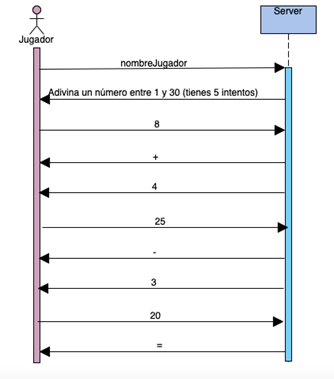
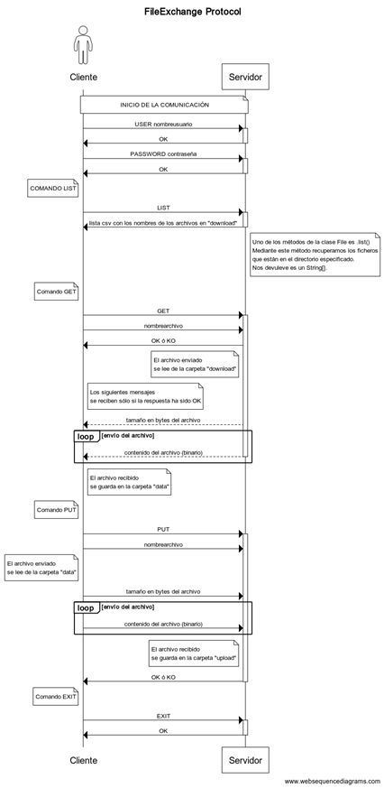

PSP - U4 Proyectos
Índice
1. Proyecto U4P1_PreguntasRespuestas
Se trata de desarrollar una aplicación Cliente-Servidor consistente en un juego de preguntas y respuestas.
El FUNCIONAMIENTO DEL JUEGO se detalla a continuación:
-
Cada vez que un cliente se conecte, el servidor iniciará el juego pidiéndole al cliente que escoja un tema al azar de entre estos tres: “Ciencias”, “Cine” y “Literatura”.
-
Dependiendo del tema escogido, la aplicación servidor generará 3 preguntas al azar de entre una batería de 4 preguntas, sobre ese determinado tema.
-
Para cada pregunta el jugador (cliente) tendrá 2 intentos.
-
Si el jugador no acierta la respuesta en el primer intento, en el segundo, el servidor le ofrece al jugador (cliente) la posibilidad de darle o no una pista. Si el cliente la rechaza, el servidor vuelve a repetir la pregunta.
-
La puntuación que obtiene el cliente en cada pregunta y que se acumulará a su puntuación global es la siguiente:
- Si acierta en el primer intento, obtiene 3 puntos
- Si acierta en el segundo intento
- Si ha rechazado la pista que le daba el servidor, obtiene 2 puntos
- Si ha aceptado la pista que le daba el servidor, obtiene 1 punto
- Si no acierta en ninguno de los dos intentos, obtiene 0 puntos
-
Tras formular las tres preguntas, el servidor le indicará al cliente cuál es la puntuación total que ha obtenido en esa partida, y le preguntará si quiere volver a jugar. En caso de no querer, se finaliza el juego
Para ello, se te pide:
a) Implementación y diseño del protocolo
b) Implementación de la aplicación Cliente (psp.proyectos.U4P1_JugadorPR)
c) Implementación de la aplicación Servidor multihilo) (psp.proyectos.U4P1_ServidorPR)
Mejoras
Puedes añadirle las mejoras que desees. Indícalas en el texto habilitado con la entrega del proyecto.
| Tema | Pregunta | Respuesta | Pista |
|---|---|---|---|
| Ciencias | Parte de la planta que absorbe el agua | raíces | tierra |
| Ciencias | Unidad básica de la materia | átomo | indivisible |
| Ciencias | Ave de pico curvado | loro | habla |
| Ciencias | Piedra preciosa | esmeralda | verde |
| Cine | Saga de películas de acción | Rambo | Acorralado |
| Cine | Actor ganador de un Óscar | Bardem | español |
| Cine | Actor cómico | Cantinflas | mejicano |
| Cine | Trilogía | Matrix | distópica |
| Literatura | Poeta | Béquer | español |
| Literatura | Género literario | novela | Quijote |
| Literatura | Unidad de un poema | verso | rima |
| Literatura | Tema de literatura | medieval | caballero |
A continuación se muestra un ejemplo de comunicación entre el cliente y el Servidor
- Los mensajes precedidos por Servidor> se muestran en el cliente
- Los mensajes precedidos por Cliente> se muestran en el servidor
- Los mensajes que no van precedidos por nada, son las entradas que se hacen en el cliente.
Servidor> Se inicia el juego.
Servidor> Escoge un tema al azar: Ciencias (1), Cine(2) o literatura (3)
1
Cliente> 1
Servidor> Ave de pico curvado
periquito
Cliente> periquito
Servidor> has agotado un intento ¿Quieres una pista? (s/n)
s
Cliente> s
Servidor> habla
loro
Cliente> loro
Servidor> Correcto. Piedra preciosa
esmeralda
Cliente> esmeralda
Servidor> Correcto. Unidad básica de la materia
protón
Cliente> protón
Servidor> has agotado un intento ¿Quieres una pista? (s/n)
n
Cliente> n
Servidor> unidad básica de la materia
electrón
Cliente> electrón
Servidor> Incorrecto. Puntuación obtenida: 4 ¿Quieres volver a jugar? (s/n)
n
Cliente> n
Servidor> Adios
Cliente "dummy"
El protocolo de comunicación entre el cliente y el servidor debe ser el que se muestra en el ejemplo. Debes implementar un protocolo que permita la comunicación entre el cliente y el servidor de forma que se pueda llevar a cabo el juego.
Normalmente, la comunicación entre servidor y cliente se realiza mediante comandos. De esta forma, tanto el cliente como el servidor, pero principalmente el servidor, saben en todo momento qué tipo de información están recibiendo, en función del comando que la precede. Así pueden actuar en consecuencia.
Sin embargo, en este caso, para simplificar el cliente y que sea simplemente un "dummy" que recibe las preguntas y responde, no vamos a implementar un protocolo de comunicación con comandos. Simplemente, el cliente recibirá laos mensajes con el testo y las preguntas y responderá con las respuestas.
2. Proyecto U4P2_JuegoAdivinarNumero (modo normal) hasta 7 puntos
Implementad una aplicación cliente-servidor multihilo TCP, de manera que pueda aceptar peticiones de múltiples clientes. La aplicación consistirá en un simple juego de adivinar un número. El protocolo lo tenéis que terminar de diseñar vosotros para el cliente y para el servidor.
La comunicación entre ambos es síncrona, es decir, el cliente envía un mensaje y espera la respuesta del servidor. El servidor no envía mensajes al cliente si no ha recibido un mensaje previo de este. Por lo tanto, servidor multihilo y cliente monohilo.
El servidor recibirá como parámetros: el número de intentos y el número máximo.
El protocolo a desarrollar es el siguiente:
- El cliente envía el nombre del jugador al servidor
- El servidor envía un mensaje al cliente invitándole a que diga un número entre 1 y el númeroMáximo.
- El cliente envía un número
- El servidor envía un mensaje que le sirve al cliente para saber si el número a acertar es mayor (+), menor (-) o ha acertado (=). En caso de no haber acertado, envía otro mensaje indicando el número de intentos restantes.
- El cliente se desconectará cuando haya acertado o bien cuando el número de intentos restantes sea 0. La instancia del server que atiende al cliente también finaliza.

Información al usuario
El servidor debe informar al cliente de los intentos restantes en todo momento.
Cuando el cliente recibe los comandos del servidor, no se los muestra tal cual al usuario.
El usuario no tiene porqué conocer el protocolo. Así que esos mensajes deben traducirse en mensajes más amigables y comprensibles para el usuario.
Cada jugador juega de manera individual con el servidor. Tenéis que probar a jugar con un par de jugadores, desde la misma máquina o desde otra.
Cuando el jugador acaba podéis hacer que tenga la opción de volver a jugar, para lo cual tendrá que volver a conectarse con el server.
2.A Ampliación: Juego adivinar número (modo compartido) +3 puntos
Siguiendo el protocolo del ejercicio anterior, modificad el servidor para que ahora permita jugar la misma partida a varios jugadores.
Esto implica que hay información compartida entre todos los workers y que podemos necesitar métodos sincronizados para evitar problemas de concurrencia.
- Los jugadores se pueden incorporar a la partida en cualquier momento
- No se gestionan turnos, cada jugador puede decir los números que quiera, hasta que le queden intentos.
- Cuando un jugador acierta, el resto de jugadores reciben un mensaje adicional indicándoles que la partida ha terminado.
- El servidor en ese momento vuelve a pensar un número diferente e inicia una nueva partida para los nuevos jugadores que se conecten.
Como mejora al programa, se puede añadir un nuevo mensaje en el que el servidor le envíe a los clientes la lista de números que ya se han dicho.
3. Proyecto U4P3_DescargaArchivos
Implementad una aplicación cliente-servidor multihilo TCP, de manera que pueda aceptar peticiones de múltiples clientes. La aplicación consistirá en un simple protocolo de transferencia/intercambio de archivos.
En el servidor tendremos las carpetas download y upload en la raíz del proyecto, para la descarga y recepción de archivos respectivamente. Mientras que en el cliente tendremos la carpeta data para los archivos que envía y recibe.
El protocolo será un protocolo con estados, esto es, para realizar algunas operaciones previamente se tendrán que haber completado otras.
El protocolo a desarrollar es el siguiente:
-
El cliente envía un nombre de usuario (USER vicente)
-
El servidor valida ese usuario (de forma estática) y envía una confirmación (OK / KO) al cliente para indicarle si el usuario existe en el sistema o no.
-
El cliente envía una contraseña (PASSWORD psp)
-
El servidor comprueba (de forma estática) la identidad del usuario y envía una confirmación (OK / KO) al cliente para indicarle si la contraseña es válida o no.
- Si se intenta enviar cualquier otro comando antes de que el usuario haya sido validado el servidor contestará con el mensaje (AUTHENTICATION)
-
A partir de ese momento, el cliente puede solicitar o enviar el resto de comandos en cualquier orden, siguiendo la secuencia establecida para cada comando.
-
El cliente solicita la lista de archivos que puede descargar (LIST)
-
El servidor le devuelve una lista separada por comas con los nombres de los archivos que hay en la carpeta download. Si no hay ninguno, devuelve una cadena vacía
-
El cliente solicita la descarga de un archivo (GET)
-
El cliente envía el nombre del archivo
-
El servidor envía OK / KO para indicar si el archivo existe o no en su carpeta download
-
Si el archivo existe, el servidor envía primero el tamaño en bytes, y después va enviando el contenido del archivo, en modo binario (bytes).
El tamaño es necesario porque como ya sabemos, el stream del socket no se cierra, así que necesitamos saber cuántos bytes nos va a enviar el servidor para leer ese número de bytes.
-
El cliente recibe el contenido y lo guarda en su carpeta data con el mismo nombre que en el server
-
El cliente solicita el envío de un archivo (PUT) de los que tiene en su carpeta data
-
El cliente envía el nombre del archivo
-
El cliente envía primero el tamaño en bytes, y después va enviando el contenido del archivo en modo binario (bytes).
El tamaño es necesario porque como ya sabemos, el stream del socket no se cierra, así que necesitamos saber cuántos bytes nos va a enviar el cliente para leer ese número de bytes.
-
-
El servidor recibe el contenido lo guarda en su carpeta upload con el mismo nombre que tenía en el cliente.
-
El servidor envía OK / KO para indicar si ha recibido el archivo y lo ha podido guardar o no en su carpeta upload
-
El cliente se desconecta enviando (EXIT). Cuando recibe el OK por parte del servidor, el cliente termina su ejecución.

ERRORES
Si se envía cualquier otro comando al servidor, este responderá con el mensaje UNKNOWN_COMMAND.